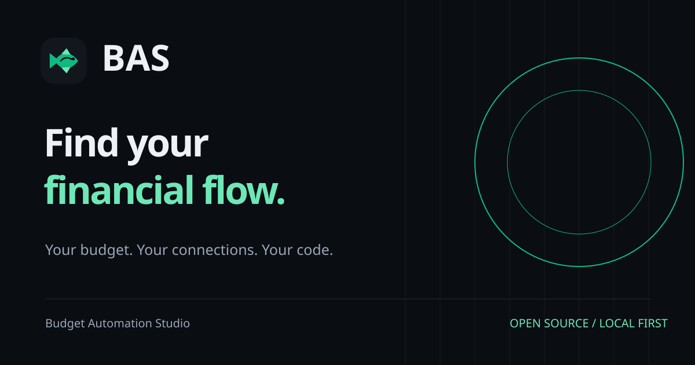

Clear
Concrete labels, understandable numbers, and visible distinctions between spending, transfers, cash flow and balances.
Identity system / 01
BAS — Budget Automation Studio. Pronounced “bass,” like the fish. A practical, adaptable identity for an open-source budget studio.
The original fish remains the anchor. Use the full name at first mention, BAS in compact spaces, and “Find your financial flow.” as the primary brand line.
01 / Positioning
Concrete labels, understandable numbers, and visible distinctions between spending, transfers, cash flow and balances.
A useful local workspace today, with optional adapters and code that can be changed as needs grow.
The user chooses connections and AI. Explain data boundaries without absolute privacy or security promises.
02 / Color
#10b981#6ee7b7#0a0d12#12161d#161b23#232a35#eef2f7#9aa6b6Use emerald for filled primary actions and graphics; pair it with ink text. Use mint for small accent text and links on dark surfaces. Financial meaning always needs a label as well as color.
03 / Typography & layout
System UI keeps the product fast and native to its host. Use a heavy BAS wordmark, tightly spaced large headlines, regular body text, and tabular figures. Body copy: 16–17px. Product labels: 11–13px. Maintain a 1.6 line height for explanatory copy.
04 / Voice
Say what the tool does and what the user can choose. “Review this month’s transactions.” “Connect the services you choose.” “Your question and budget aggregates go to your selected AI provider.”
Avoid invented traction, guaranteed savings, bank-grade claims, financial advice, or calling local-first completely offline. Keep the fish reference in the identity; everyday product copy should stay clear.
05 / Applications

Social composition is an editable SVG master. Platforms that require PNG/JPEG need a reviewed raster export; a site hostname and social image URL must be configured before launch.